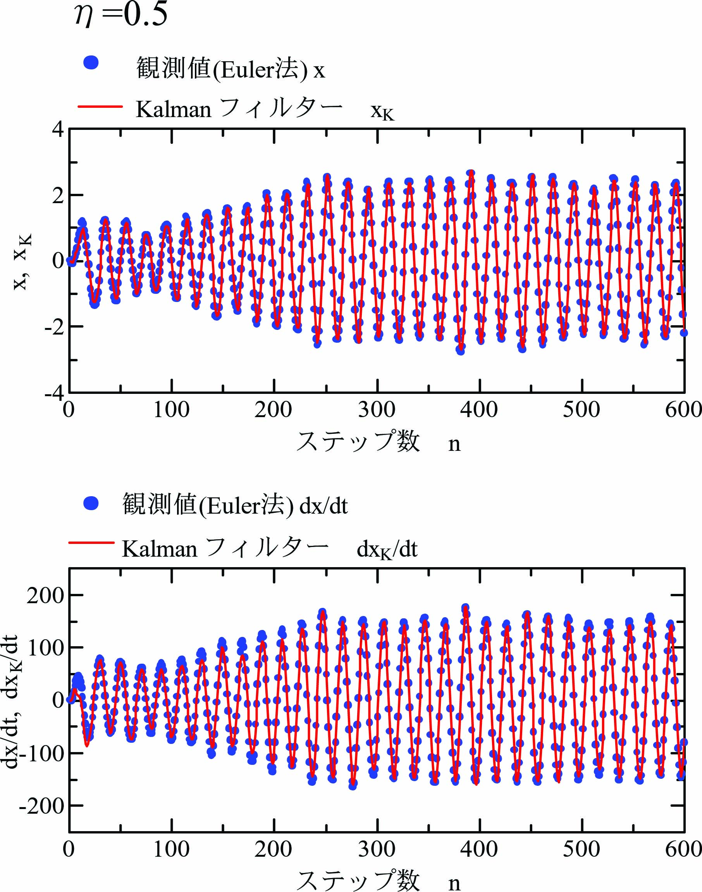
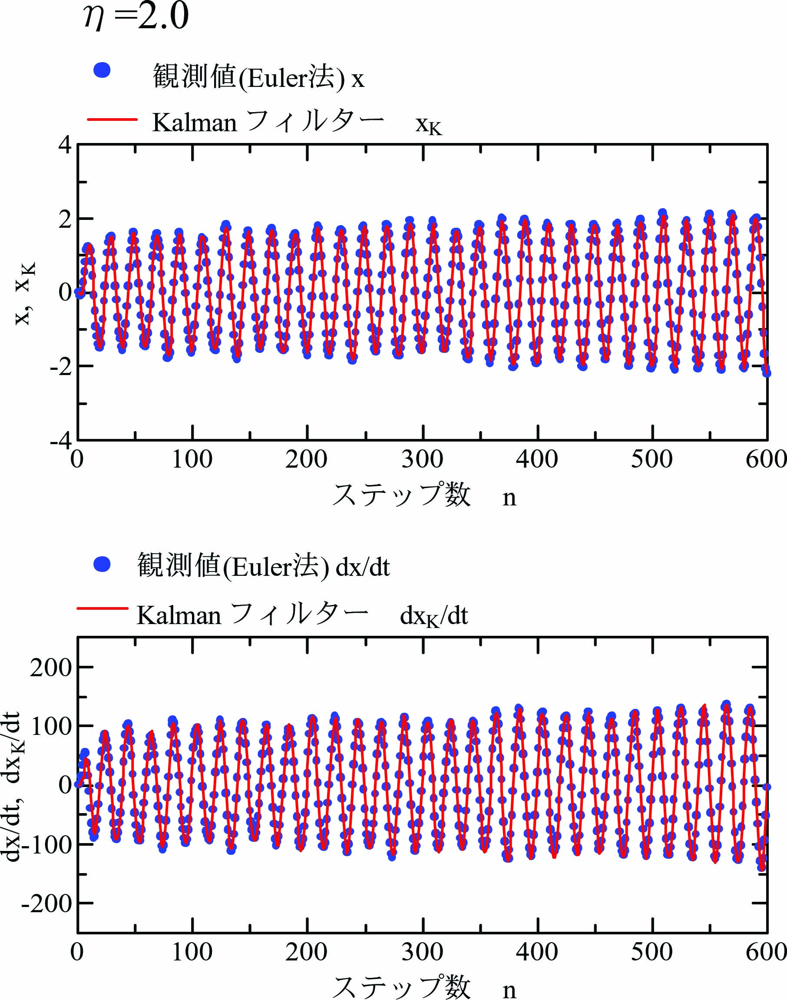
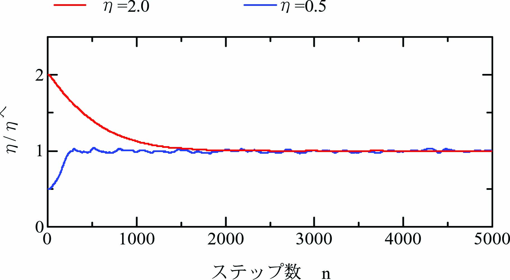

モデル規範適応制御の数値解析(数値実験) では、状態ベクトル\(\mathbf{x}=[x~~~\dot{x}]\)を観測可能として数値実験しています。 しかし、実際に観測できるのは出力\(y=x\)のみとなります。 １自由度粘弾性振動系(Kalmanフィルターの適用)では、 状態ベクトル\(\mathbf{x}=[x~~~\dot{x}]\)を再現できることを確認しています。 しかし、Kalmanフィルターには適応制御対象の状態方程式の係数行列が必要です。 さらに、モデル規範適応制御では適応制御則によって観測対象が時変となります。 １自由度粘弾性振動系(逐次最小二乗法＋Kalmanフィルター) では、観測対象の状態方程式を逐次最小二乗法で形成し、Kalmanフィルターを適用しています。 逐次最小二乗法には忘却定数定数があり、観測対象の時変にも対応できます。
適応制御対象：
\begin{align} \ddot x + a\frac{\eta}{\hat\eta}\dot x + b\frac{\eta}{\hat\eta}(x - u) = 0 \label{eq:SysEqn2} \end{align}ここに、\(x_M\)は制御対象の変位です。係数\(a=25.12\)、\(b=3943\)、初期値\(\hat{\eta}=1\)です。
適応制御により\(\hat{\eta}\)を変化させるので、式\eqref{eq:SysEqn2}は時変となります。 そこで、オイラー法による逐次数値積分 による数値シミュレーションを実行します。
オイラー法の時間刻み\(\varDelta t = 0.0001\)[s]として計算します。\(x_0(n)=x(n)\)として
\begin{align} \left. \begin{array}{@{\,}rl} \ddot x_k(n)&=~ -\eta K_D \dot x_k(n) - \eta K_P\{x_k(n) - u(n)\} +b w(n),\\ \dot x_{k+1}(n)&=~ \dot x_k(n)+\ddot x_k(n)\varDelta t +a w(n),\\ x_{k+1}(n)&=~ x_k(n) + \dot x_k(n)\varDelta t + \frac{1}{2}\ddot x_k(n)\varDelta t^2 +v(n). \end{array} \label{eq:Euler} \right\} \end{align}\(v(n)\)は出力ノイズ、\(w(n)\)は入力ノイズであり、乱数を用いて発生させます。
規範モデル：
\begin{align} \ddot x_M + a\dot x_M + b(x_M - u)= 0 \label{eq:MdlEqn} \end{align}ここに、\(x_M\)は規範モデルの変位です。
規範モデルの状態ベクトルを\(\mathbf{x}_M(n)=[x_M(n)~~\dot{x}_M(n)]^T\)として、 次の離散時間状態方程式で生成します。
\begin{align} \mathbf{x}_M(n+1)&=~\mathbf{P}_M\mathbf{x}_M(n)+\mathbf{Q}_Mu(n) \label{eq:RtnEqn} \end{align}ここに、\(u(n)\)は入力、\(\mathbf{x}_M(n)\)は状態量、\(\mathbf{P}_M\)は遷移行列、\(\mathbf{Q}_M\)は入力係数行列です。
式\eqref{eq:MdlEqn}において、係数\(a=25.12\)、\(b=3943\)、離散化によるサンプリング周期\(T=0.005\)[s]として 係数行列\(\mathbf P_M\)、\(\mathbf Q_M\)は次式となります。
\begin{align*} \mathbf{P}_M= \left[ \begin{array}{@{\,}cc} 0.9531&0.004222\\ -18.23&0.8370 \end{array} \right],~~~ \mathbf{Q}_M= \left[ \begin{array}{@{\,}c} -0.04691\\ 18.23 \end{array} \right]. \label{eq:MatPQ} \end{align*}振動数\(f=10\)[Hz]として、入力\(u(n)\)を次式の正弦振動で与えます。
\begin{align} u(n) = \sin(2\pi nfT)\label{eq:SineInp} \end{align}観測対象\eqref{eq:RtnEqn}からは観測値として\(y(n)\)しか観測されないので、 \(y(n)\)の中央差分により\(\dot x(n)\)を求めます。
\begin{align} \dot x^\prime(n) = \frac{y(n+1)-y(n-1)}{2T} \label{eq:DiffX} \end{align}式\eqref{eq:DiffX}が未来値\(y(n+1)\)を含んでいるので、ここでは1ステップ過去(\(n-1\))を現在(\(n\))とします。 まず、逐次最小二乗法を適用するために次の変数を導入します。
\begin{align} \mathbf{y}(n)= \left[ \begin{array}{@{\,}c} x(n-1)\\ \dot x^\prime(n-1) \end{array} \right],~~~ \mathbf{z}(n)= \left[ \begin{array}{@{\,}c} x(n-1)\\ \dot x^\prime(n-1)\\ u(n-1) \end{array} \right]. \label{eq:Vec_xhat} \end{align}\(\mathbf{y}(n)\)と\(\mathbf{z}(n)\)の関係は次の一次式となります。
\begin{align} \mathbf{y}(n) = \hat{\mathbf{A}}(n)\mathbf{z}(n),~~~\hat{\mathbf{A}}(n)=[\hat{\mathbf{P}}~~~\hat{\mathbf{Q}}]. \label{eq:LstEQ} \end{align}ここに、\(\hat{\mathbf{A}}(n)\)は逐次最小二乗法で推定される係数行列です。 \(\mathbf{x}(n)\)、\(u(n)\)で構成される \(\mathbf{y}(n)\)、\(\mathbf{z}(n)\)に対して次式の逐次最小二乗法を適用します。
\begin{align} \left. \begin{array}{@{\,}rl} \hat{\mathbf{A}}(n)&=~\hat{\mathbf{A}}(n-1)+\{\mathbf{y}(n)-\hat{\mathbf{A}}(n-1)\mathbf{z}(n)\}\mathbf{K}(n)\\ \mathbf{K}(n)&=~\mathbf{z}(n)^T\mathbf{R}(n)\\ \mathbf{R}(n)&=~\frac{1}{\lambda}\mathbf{R}(n-1)-\frac{1}{\mu}\mathbf{R}(n-1)\mathbf{z}(n)\mathbf{z}(n)^T\mathbf{R}(n-1)\\ \mu&=~\lambda+\mathbf{z}(n)^T\mathbf{R}(n-1)\mathbf{z}(n) \end{array}\label{eq:RtLstMtd} \right\} \end{align}\(\hat{\mathbf{A}}(n)\)、\(\mathbf{K}(n)\)、\(\mathbf{R}(n)\)の初期値をそれぞれ次式とします。
\begin{align*} \hat{\mathbf{A}}(0)= \left[ \begin{array}{@{\,}cc} \mathbf{P}_M&\mathbf{Q}_M \end{array} \right],~~~ \mathbf{K}(0)= \left[ \begin{array}{@{\,}c} 0\\ 0 \end{array} \right],~~~ \mathbf{R}(0)= \left[ \begin{array}{@{\,}ccc} 1&0&0\\ 0&1&0\\ 0&0&1 \end{array} \right]. \end{align*}逐次最小二乗法\eqref{eq:RtLstMtd}で得られる係数行列\eqref{eq:LstEQ}の\([\hat{\mathbf{P}}~~\hat{\mathbf{Q}}]=\hat{\mathbf{A}}(n)\) として、定常Kalmanフィルターを次式とします。
\begin{align} \left. \begin{array}{@{\,}rl} {\mathbf{q}}(n+1)&=~\hat{\mathbf{P}}\hat{\mathbf{x}}(n)+\hat{\mathbf{Q}}\mathbf{u}(n)\\ e(n)&=~y(n)-\mathbf{C}\mathbf{q}(n)\\ \hat{\mathbf{x}}(n)&=~{\mathbf{q}}(n)+\mathbf{K}e(n) \end{array}\label{eq:KalmanFilt} \right\} \end{align}Kalmanフィルター\eqref{eq:KalmanFilt}に用いるカルマンゲイン\({\mathbf K}\)はRiccati方程式の解\({\mathbf Z}(n)\)を用いて次式で与えられます。
\begin{align} \mathbf{K}={\mathbf Z}(n){\mathbf C}^T\{{\mathbf C}{\mathbf Z}(n){\mathbf C}^T+{\mathbf V}\}^{-1}. \label{eq:KalmanGain} \end{align}Riccati方程式は次式となります。
\begin{align} {\mathbf Z}(n+1)=\hat{\mathbf{P}}{\mathbf Z}(n)\hat{\mathbf{P}}^T-\hat{\mathbf{P}}{\mathbf Z}(n){\mathbf C}^T({\mathbf C}{\mathbf Z}(n){\mathbf C}^T+{\mathbf V})^{-1}{\mathbf C}{\mathbf Z}(n)\hat{\mathbf{P}}^T+{\mathbf W}.\label{eq:MatP_A} \end{align}Riccati方程式に使用するノイズの共分散行列\(\mathbf{V}\)、\(\mathbf{W}\)を次式とします。
\begin{align*} \mathbf{V}=5.271\times 10^{-5},~~~ \mathbf{W}= \left[ \begin{array}{@{\,}cc} 1.201\times 10^{-5}&0\\ 0&1.8314 \end{array} \right]. \end{align*}Kalmanフィルター\eqref{eq:KalmanFilt}からの状態出力\(\hat{\mathbf{x}}(n)=[\hat x(n)~~~\dot{\hat{x}}(n)]^T\)を用いて、 適応制御則を次式で与えます。
\begin{align} \left. \begin{array}{@{\,}rl} \dot{\hat{\eta}} &=~ -\alpha \frac{v_{FB}(n)\varepsilon(n)}{\hat\eta},\\ v_{FB}(n) &=~ -a\dot{\hat x}(n) - b(\hat{x}(n) - u(n)),\\ \varepsilon(n) &=~ x_M(n) - \hat{x}(n) + c(\dot x_M(n) - \dot{\hat{x}}(n)). \end{array} \right\} \label{eq:AdaptRule0} \end{align}ここに、\(\alpha=10^{-5}\)、\(c=2/25.12\)とします。 式\eqref{eq:AdaptRule0}において、\(\dot{\hat{\eta}}=(\eta(n)-\eta(n-1))/T\)と近似して、 \(\dot{\hat{\eta}}\)を積分ます。
\begin{align} \hat\eta(n)=\hat\eta(n-1)-\alpha T\frac{v_{FB}(n)\varepsilon(n)}{\hat\eta} \label{eq:eta_n} \end{align}数値実験では\eqref{eq:SysEqn2}から\eqref{eq:eta_n}の計算を１ステップとします。
ここでは、 適応制御対象\eqref{eq:SysEqn2}の\(\eta=0.5 (< \hat{\eta})\)と\(\eta=2.0 (> \hat{\eta})\)の場合について、 制御対象の状態ベクトル\(\mathbf{x}(n)=[x(n)~~\dot{x}(n)]^T\)と Kalmanフィルターの状態ベクトル\(\hat{\mathbf{x}}(n)=[\hat{x}(n)~~\dot{\hat{x}}(n)]^T\)を比較します。
まず、下図は\(\eta=0.5\)の場合について制御対象の状態ベクトル\(\mathbf{x}(n)=[x(n)~~\dot{x}(n)]^T\)と Kalmanフィルターの状態ベクトル\(\hat{\mathbf{x}}(n)=[\hat{x}(n)~~\dot{\hat{x}}(n)]^T\)を描画したグラフです。 ただし、図では\(\hat x\)を\(x_K\)と表記しています。 \(n=100\)以降は両者は見事に一致し、Kalmanフィルターが見事に制御対象を再現していることを確認できます。
次に、下図は\(\eta=2.0\)の場合について制御対象の状態ベクトル\(\mathbf{x}(n)=[x(n)~~\dot{x}(n)]^T\)と Kalmanフィルターの状態ベクトル\(\hat{\mathbf{x}}(n)=[\hat{x}(n)~~\dot{\hat{x}}(n)]^T\)を描画したグラフです。 ただし、図では\(\hat x\)を\(x_K\)と表記しています。 \(n=500\)以降は両者は見事に一致し、Kalmanフィルターが見事に制御対象を再現していることを確認できます。
下図は初期値\(\eta=0.5\)と\(\eta=2.0\)の場合について、\(\eta/\hat{\eta}\)を描画したグラフです。 いずれの場合も、\(\eta/\hat{\eta}=1\)に収束することを確認できます。 モデル規範適応制御の数値解析(数値実験) と同様に、\(\eta=0.5\)の場合が速く収束しています。
以上のことから、モデル規範適応制御に逐次最小二乗法とKalmanフィルターを適用した場合でも適応制御則が有効に動作し、 制御対象\eqref{eq:SysEqn2}が規範モデル\eqref{eq:MdlEqn}に一致することを確認できます。